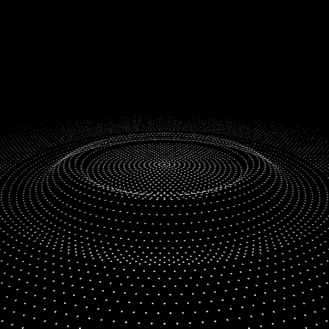

Déconnexion
Le monde sur des écrans.
J’ai fini mes tâches, je déconnecte mon espace de travail.
“Il est 22 heures, votre dîner est prêt.
- Merci Omnia.
- Je constate que le niveau de lait est faible. Voulez-vous en commander ?
- Oui.
- Commande validée. Vous avez 30 nouvelles interactions.
- Je regarderai plus tard”

Encore une journée sans sortir, mais j'y suis habitué, cela ne me manque pas, je n'aime pas sortir : l'immensité de l'extérieur m'effraie. Plus personne ne sort d'ailleurs. Plus besoin de sortir, Omnia produit, achete, livre, prépare… Omnia, l'intelligence artificielle la plus aboutie, contrôle tout pour nous. Pourquoi sortir alors que j'ai tout ce qu'il faut sans bouger ? Pourquoi quitter le confort de mon logement pour affronter les aléas météorologiques ? Chacun chez soi, avec son assistant virtuel.
Je montre ce que je veux de ma vie, et de moi. Je regarde celle des autres, du moins ce qu'ils veulent en montrer quand je veux. Je peux rencontrer le monde entier sans bouger.
Plus de complexe, mon physique je le choisis.
Plus de complexe, mon profil je le remplis : paraître avant d’être.
J’avale mon repas, je retourne devant mon ordinateur. 30 Nouvelles interactions : des salutations, des invitations, des sollicitations...
45 relations connectées...
40… 35… 20… 5… 0…
La lumière clignote… Les écrans se brouillent. Mes appareils s’éteignent les uns après les autres...
Et plus rien… Seulement le silence et l’obscurité… Le temps semble figé, déconnecté… Comme moi…

Plus d’électricité… Cela ne m’est jamais arrivé. Appliquer le protocole de déconnexion :
“S’il n’y pas de danger dehors : Sortir” Trop vaste, trop vide... Je ne sais plus... Je ne suis pas sorti depuis des années... Et si la coupure venait de dehors ? Comment savoir s’il y a danger ?
Je dois rester calme…
Respirer… Respirer... Je dois penser à quelque chose de relaxant... Je dois penser aux images de méditation.

Quel est le protocole déjà ? Rester calme… Rester calme... Après tous ces exercices, ces entrainements, je devrais être prêt !
On panique toujours plus quand ça arrive vraiment il paraît...
J’ai gardé la boite d’urgence dans un tiroir… Je la cherche… Mais où est-elle ? Au fond de celui-ci !
Je l’ouvre. Je me remémore la formation...
D’abord “Rétablir la lumière”. Je dois avoir une bougie quelque part… Ah, la voilà ! Je craque une allumette, je l’allume. La lumière revient… Faible et fragile, je dois la garder vive… Ne pas la brusquer...
Respirer… Respirer… Mais sans souffler la flamme !

“S’occuper l’esprit”... Mais avec quoi ?
Qu’est-ce que c’est ? Un livre !
Un livre sans écran, sans batterie… On ne peut régler la taille du texte, on ne peut régler la luminosité… Un système bien simpliste et archaïque… Pensées de Blaise Pascal, je l’ai étudié pendant mes années lycée sur la plateforme scolaire.

Je l’ouvre au hasard, je lis à la faible lumière de la bougie :
“Le silence de ces espaces infinis m'effraie”
La technologie nous a rendus puissants, du moins en illusion…
Je me retrouve seul face à la désillusion de la déconnexion brutale, me mettant face à mon insignifiance et mon impuissance face à l'immensité et au silence.